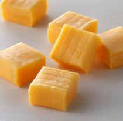
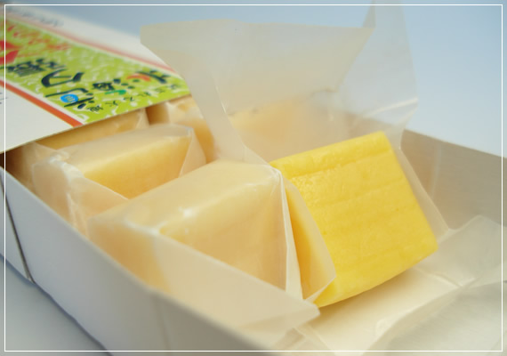
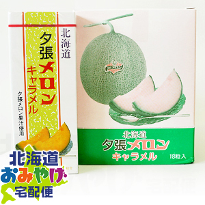

  
夕張メロンキャラメル
夕張メロンは、北海道の大地の恵みをたっぷり受けて大きく育ったとてもジューシーで、果肉の柔らかいメロンです。夕張市農業協同組合に集荷され、厳格な検査に合格したものだけを「夕張メロン」のブランドで出荷するため、夕張メロンは夕張市農業協同組合の登録商標となっているんです。その新鮮な夕張メロンの果汁をたっぷり使用して風味豊かなに仕上げたのが夕張メロンキャラメルです。 夕張メロン果汁を使用しているだけあって夕張メロンの味と香りが濃厚です。
夕張メロンは、北海道の大地の恵みをたっぷり受けて大きく育ったとてもジューシーで、果肉の柔らかいメロンです。夕張市農業協同組合に集荷され、厳格な検査に合格したものだけを「夕張メロン」のブランドで出荷するため、夕張メロンは夕張市農業協同組合の登録商標となっているんです。その新鮮な夕張メロンの果汁をたっぷり使用して風味豊かなに仕上げたのが夕張メロンキャラメルです。 夕張メロン果汁を使用しているだけあって夕張メロンの味と香りが濃厚です。